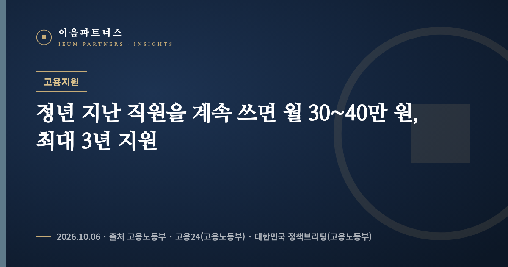

정년 지난 직원을 계속 쓰면 월 30~40만 원, 최대 3년 지원

정년을 앞둔 직원 가운데 회사에 꼭 필요한 사람이 있다면, 인건비 부담 때문에 계속 고용을 망설이게 됩니다. 고용노동부는 2026년 10월 6일 인포그래픽에서 “고령자 계속고용장려금으로 부담을 덜어드립니다”라며 대상과 금액을 다시 안내했습니다(고용노동부). 이 글에서는 어떤 회사가 대상인지, 얼마를 언제 신청하는지 정리합니다.
이 장려금은 정년 이후의 고용을 회사가 제도로 만들어야 받을 수 있어, 직원의 정년이 닥친 뒤에 알아보면 늦을 수 있습니다. 우리 회사가 해당하는지 궁금하다면 카카오톡 채널 이음파트너스에서 함께 확인해 볼 수 있습니다.
어떤 회사가 대상인가
우선지원대상기업(업종별 상시 근로자 수 기준을 충족하는 중소기업), 중견기업, 사회적기업 가운데 60세 이상 피보험자(고용보험 가입자) 비율이 30% 이하인 회사가 대상입니다. 그리고 다음 세 가지 계속고용제도 가운데 하나를 도입해야 합니다.
- 현재 정년을 1년 이상 연장
- 정년 폐지
- 정년 후 1년 이상 재고용
| 구분 | 내용 |
|---|---|
| 지원 금액 | 정년 이후 계속 고용한 근로자 1인당 수도권 월 30만 원, 비수도권 월 40만 원 |
| 지원 기간 | 최대 3년 |
| 지원 한도 | 해당 분기 월평균 피보험자 수의 30%와 30명 가운데 적은 인원 |
| 확인처 | 고용24(work24.go.kr), 고용노동부 고객상담센터 1350 |
언제, 어떻게 신청하나
고용24 안내에 따르면 장려금은 분기 단위로 신청합니다. 계속고용한 날이 속한 분기의 마지막 날 다음 날부터 1년 안에 신청해야 하며, 예를 들어 계속고용일이 2월 1일이면 4월 1일부터 다음 해 3월 31일까지 신청할 수 있습니다(고용24).
제외되는 경우도 있습니다. 해당 사업장에서 고용보험 가입 기간이 2년 미만이거나 신고한 월평균 보수가 115만 원 미만인 근로자는 대상이 아니고, 회사는 계속고용제도를 시행하기 전부터 60세 이상 정년을 정해 운영하고 있어야 합니다.
신청은 회사가 직접 하고, 지원 여부와 금액은 고용노동부(고용센터) 심사로 정해집니다. 60세 이상 직원이 늘어난 회사에 주는 ‘고령자 고용지원금’과는 다른 제도이며, 두 지원금은 함께 받을 수 없습니다(대한민국 정책브리핑).
대표님이 지금 확인할 것
- 앞으로 1~2년 안에 정년이 되는 직원 명단과, 그 가운데 계속 함께할 사람을 정리했는지
- 우리 회사 60세 이상 고용보험 가입자 비율이 30% 이하인지
- 정년 연장·폐지·재고용 가운데 어떤 방식을 택할지, 취업규칙 개정이 필요한지 노무사와 상의했는지
- 분기마다 신청 기한을 놓치지 않도록 담당자와 일정을 정해 두었는지
참고한 자료
- [인포그래픽] 고령자 계속고용장려금 — 고용노동부 (2026.10.06)
- 고령자 계속고용장려금 제도 안내 — 고용24(고용노동부) (2026.11.28 확인)
- [중장년 고용정책] ‘고령자 고용지원금’이 뭐지? — 대한민국 정책브리핑(고용노동부) (2024.06.18)
정년이 다가오는 직원을 계속 고용할 방법을 함께 고민해 보고 싶다면 카카오톡 채널 이음파트너스로 편하게 물어봐 주세요.
※ 이 글은 일반적인 정보 제공을 위한 것으로, 개별 사안은 세무사·노무사 등 전문가와 함께 확인하시기 바랍니다.